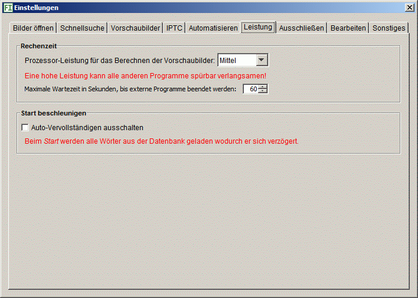

Hier können Sie Komfort-Funktionen abwählen zum Beschleunigen des Programmstarts.
Sie können einstellen, wieviel Rechenleistung das Programm zum Berechnen der Vorschaubilder und Lesen der Metadaten benutzt. Wollen Sie noch mit anderen Programmen arbeiten, ist die Einstellung Mittel in der Regel geeignet. Sollte der Rechner langsamer reagieren als gewohnt, wählen Sie Niedrig. Das Erzeugen der Vorschaubilder dauert dann länger. Die Einstellung Hoch ist nur geeignet, wenn Sie nicht mehr am Rechner arbeiten müssen, erzeugt die Vorschaubilder aber am schnellsten.
